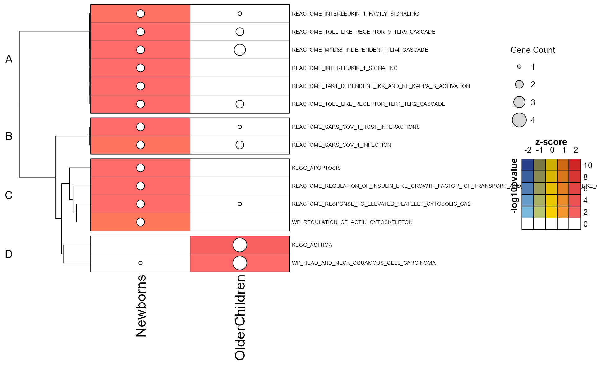
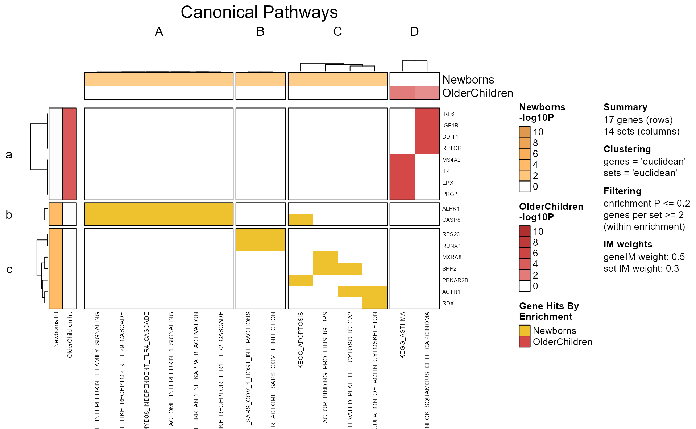
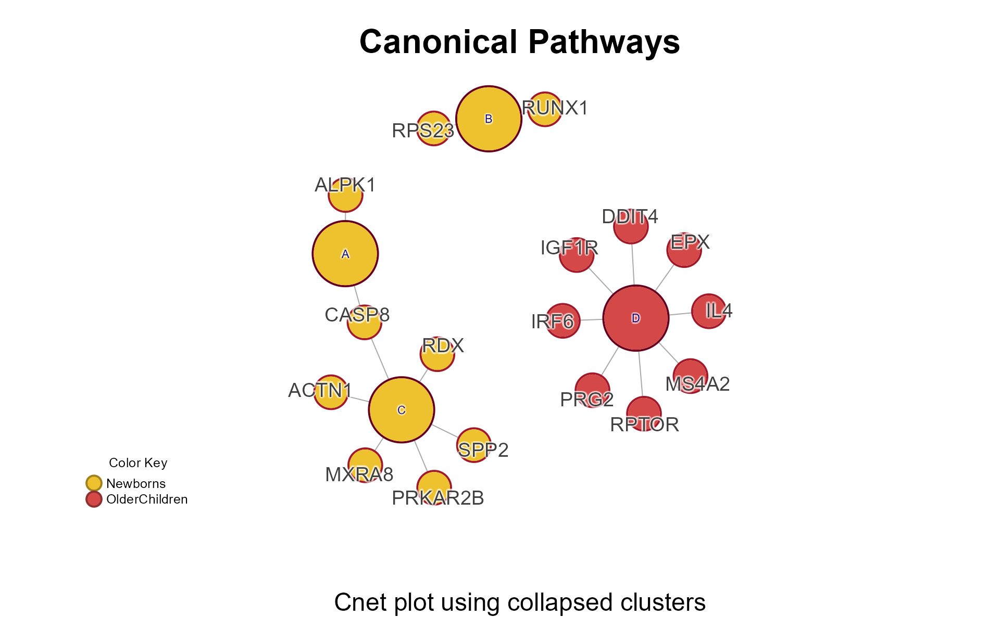
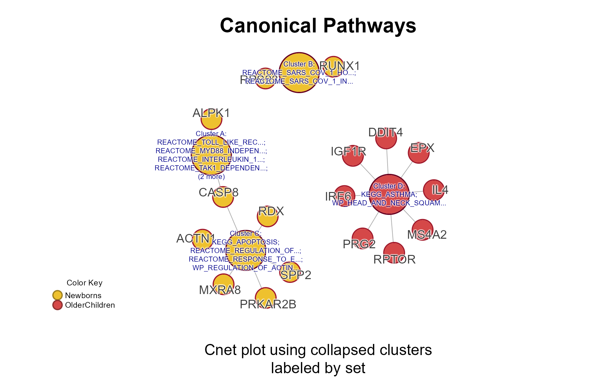
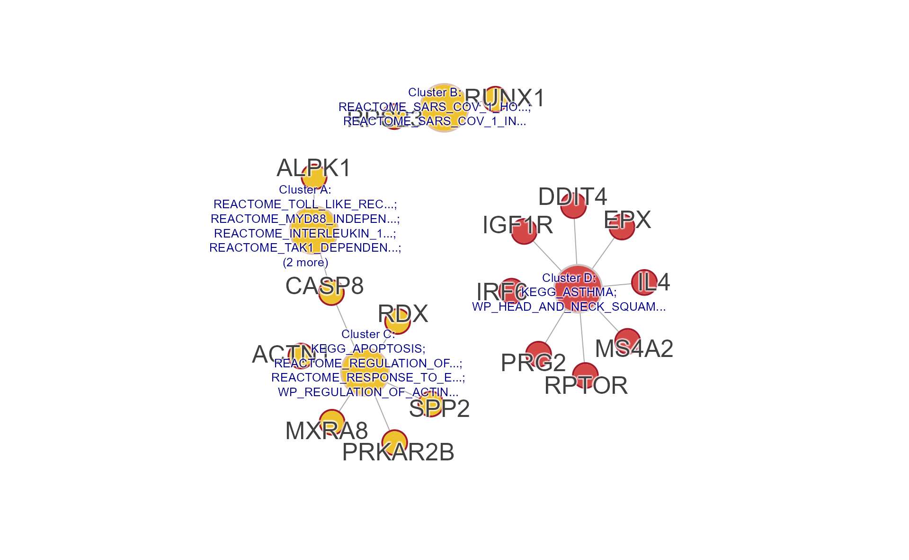

Multienrichment with clusterProfiler
Source:vignettes/importClusterProfiler.Rmd
importClusterProfiler.Rmd
library(multienrichjam)
#>
library(jamba);
# library(colorjam);
# suppressPackageStartupMessages(library(ComplexHeatmap))
options("warn"=-1)msigdbr Requirement
This guide requires the msigdbr R package from CRAN.
if (!requireNamespace("msigdbr", quietly=TRUE)) {
jamba::printDebugHtml("The ", "msigdbr",
" package is required for this vignette. Stopping here.")
knitr::knit_exit()
}clusterProfiler enrichment
This document describes steps recommended for clusterProfiler
enrichment data, which include specific objects such as
enrichResults and others.
Refer to the clusterProfiler e-Book, an outstanding and comprehensive guide to using clusterProfiler to generate gene set enrichment data.
There are two general approaches:
- Run
clusterProfiler::enricher()for alistof experiments. - Use an existing
listofclusterProfiler::enricher()results.
clusterProfiler enrichment
Prepare MSigDB Pathway Data
The example below demonstrates how to prepare canonical pathways from
MSigDB to use for
gene set enrichment. These pathways are used with a list of genes in
Reese_genes to test for enrichment.
The msigdbr R package is used to download necessary
data, following the guidance in the clusterProfiler e-Book: MSigDb
analysis. See msigdbr::msigdbr() for more details.
Review MSigDB Collections
The msigdbr package offers convenient access to
collections of gene sets available from MSigDB, shown below.
msigdb_collections <- msigdbr::msigdbr_collections(db_species="HS")| gs_collection | gs_subcollection | gs_collection_name | num_genesets |
|---|---|---|---|
| C1 | Positional | 302 | |
| C2 | CGP | Chemical and Genetic Perturbations | 3,538 |
| C2 | CP | Canonical Pathways | 19 |
| C2 | CP:BIOCARTA | BioCarta Pathways | 292 |
| C2 | CP:KEGG_LEGACY | KEGG Legacy Pathways | 186 |
| C2 | CP:KEGG_MEDICUS | KEGG Medicus Pathways | 658 |
| C2 | CP:PID | PID Pathways | 196 |
| C2 | CP:REACTOME | Reactome Pathways | 1,787 |
| C2 | CP:WIKIPATHWAYS | WikiPathways | 885 |
| C3 | MIR:MIRDB | miRDB | 2,377 |
| C3 | MIR:MIR_LEGACY | MIR_Legacy | 221 |
| C3 | TFT:GTRD | GTRD | 505 |
| C3 | TFT:TFT_LEGACY | TFT_Legacy | 610 |
| C4 | 3CA | Curated Cancer Cell Atlas gene sets | 148 |
| C4 | CGN | Cancer Gene Neighborhoods | 427 |
| C4 | CM | Cancer Modules | 431 |
| C5 | GO:BP | GO Biological Process | 7,583 |
| C5 | GO:CC | GO Cellular Component | 1,042 |
| C5 | GO:MF | GO Molecular Function | 1,855 |
| C5 | HPO | Human Phenotype Ontology | 5,748 |
| C6 | Oncogenic Signature | 189 | |
| C7 | IMMUNESIGDB | ImmuneSigDB | 4,872 |
| C7 | VAX | HIPC Vaccine Response | 347 |
| C8 | Cell Type Signature | 866 | |
| H | Hallmark | 50 |
MSigDB Canonical Pathways
This tutorial uses collection = "C2" because it contains
all canonical pathway gene sets from multiple sources. The canonical
pathways are then filtered by retaining the subset with
gs_subcollection containing "CP".
There are two columns used by
clusterProfiler::enricher():
- gs_name - the gene set name
- gene - usually gene symbol
Using these two columns, the data.frame needs to retain
only unique rows.
# C2 canonical pathways
msig_cp <- subset(
msigdbr::msigdbr(
species = "Homo sapiens",
collection="C2"),
grepl("CP", gs_subcollection))
msig_cp_gs <- unique(data.frame(msig_cp[, c("gs_name", "gene_symbol")]))
head(msig_cp_gs, 10)For the purpose of this vignette, a subset of canonical pathways are
available using data(msig_test), and should only be used
for this analysis.
| gs_name | gene_symbol |
|---|---|
| BIOCARTA_AGPCR_PATHWAY | ARRB1 |
| BIOCARTA_AKAP13_PATHWAY | AKAP13 |
| BIOCARTA_AKAP95_PATHWAY | AKAP8 |
| BIOCARTA_AKAPCENTROSOME_PATHWAY | AKAP9 |
| BIOCARTA_BAD_PATHWAY | ADCY1 |
| BIOCARTA_CARM1_PATHWAY | CARM1 |
| BIOCARTA_CASPASE_PATHWAY | APAF1 |
| BIOCARTA_CELL2CELL_PATHWAY | ACTN1 |
| BIOCARTA_CERAMIDE_PATHWAY | AIFM1 |
| BIOCARTA_CFTR_PATHWAY | ADCY1 |
Run enricher()
The clusterProfiler
documentation for enricher() is straightforward for
over-representation analysis (ORA). Note that other clusterProfiler
enrich* tools can be used, for example
clusterProfiler::enrichKEGG(),
clusterProfiler::enrichPC().
The most important argument to include:
pvalueCutoff=1This option retains all enrichment results without filtering.
The P-value will be filtered later by multienrichjam.
This example uses Reese_genes containing genes
identified by Reese
et al 2019 in Epigenome-wide meta-analysis of DNA
methylation and childhood asthma https://doi.org/10.1016/j.jaci.2018.11.043.
The data are stored as a list of significant genes, so
we iterate the list using lapply().
# Gene hit lists
data(Reese_genes)
# enricher() for each element of a list
erlist <- lapply(Reese_genes, function(igenes){
er <- clusterProfiler::enricher(igenes,
pvalueCutoff=1,
TERM2GENE=msig_test,
minGSSize=5, maxGSSize=5000)
})You may also run a specific enrichment function in
clusterProfiler such as
clusterProfiler::enrichPC() which automatically uses
Pathway Commons pathways.
Run multiEnrichMap()
The erlist from the previous step will be the input to
multiEnrichMap().
mem <- multiEnrichMap(erlist,
pvalueColname="qvalue",
p_cutoff=0.01,
cutoffRowMinP=0.2,
min_count=2,
topEnrichN=20)The default summary for mem describes the contents,
shown below:
mem
#> class: Mem
#> dim: 2 enrichments, 14 sets, 17 genes
#> - enrichments (2): Newborns, OlderChildren
#> - sets (14): REACTOME_TAK1_DEPENDENT_IKK_AND_NF_KAPPA_B_ACTIVATION, KEGG_APOPTOSIS, ..., KEGG_ASTHMA, WP_HEAD_AND_NECK_SQUAMOUS_CELL_CARCINOMA
#> - genes (17): ACTN1, ALPK1, ..., RUNX1, SPP2
#> Analysis parameters:
#> - top N per enrichment: 20
#> - significance threshold: 0.2 (colname: qvalue)
#> - min gene count: 2
#> - direction colname: zScoreMem Plot Folio
The mem_plot_folio() represents a key step in the
analysis workflow.
Pathway clusters are defined by analyst parameters:
- The number of pathways clusters
- The relative weight of the gene-pathway incidence matrix.
- The method used for clustering.
Mem Plot Folio then provides a series of visualizations, described in
detail in mem_plot_folio().
Only the first four plots are shown below using
do_which=c(1, 2, 3, 4).
Mpf <- mem_plot_folio(mem,
pathway_column_split=4,
column_cex=0.4, row_cex=0.4,
row_names_max_width=grid::unit(9, "cm"),
column_names_max_height=grid::unit(4, "cm"),
node_factor=2.5,
label_factor_l=list(nodeType=c(Set=0.7, Gene=1.5)),
use_shadowText=TRUE,
do_which=c(1, 2, 3, 4),
main="Canonical Pathways")
#> Loading required namespace: gridtext
Cnet Collapsed Cluster Plot
The Cnet Collapsed Cluster Plot is often the basis for manuscript figures. The typical workflow is demonstrated below.
-
cnet <- CnetCollapsed(mpf, type="set")retrieves the Cnetigraphobject.
# extract the cnet
cnet <- CnetCollapsed(Mpf, do_plot=FALSE, type="set");jam_igraph() is a custom plotting function with
enhancements:
-
node_factor=2multiplies node size by 2. -
label_dist_factor=2multiplies label distance from node center by 5. -
use_shadowText=TRUEuses shadowing around the text labels. -
label_factor_lresizes the node labels by ‘nodeType’ for Gene and Set. - It applies edge bundling, which helps with large networks.
- It plots using vectorized optimization.
# jam_graph instead of plot()
jam_igraph(cnet,
node_factor=2,
use_shadowText=TRUE,
label_dist_factor=5,
label_factor_l=list(nodeType=c(Gene=2, Set=0.8)))
ShinyCat for Custom Cnet Layout
The R-shiny Cnet Adjustment Tool ShinyCat is intended to help polish the Cnet plot layout when making a final figure.
The R-shiny app uses several functions:
-
nudge_igraph_node(): mode individual nodes -
adjust_cnet_nodeset(): adjust spacing, position, rotation of a nodeset -
reorder_igraph_nodes(): sort nodes in a group by color -
spread_igraph_labels(): arrage labels radially away from incoming edges -
bulk_cnet_adjustments(): several operations applied in bulk
Make sure to assign the output to a variable, or to click “Save RData” from within the R-shiny app. For example:
output_env <- launch_shinycat(g=cnet)The output is stored in an environment called
output_env.
# obtain the output data
adj_cnet <- output_env$adj_cnet;Then the new Cnet plot can be plotted, for example:
# jam_graph
jam_igraph(adj_cnet,
node_factor=2,
use_shadowText=TRUE,
label_factor_l=list(nodeType=c(Gene=2, Set=1)))